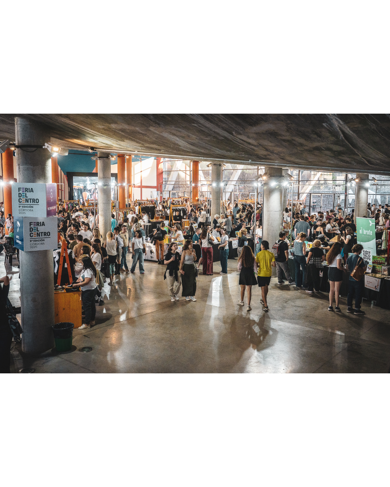
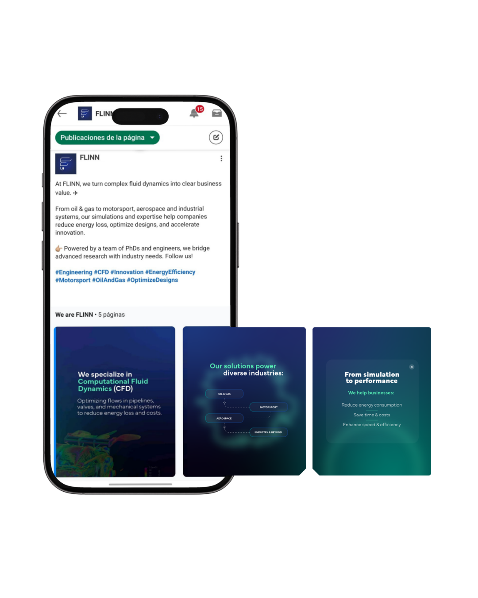
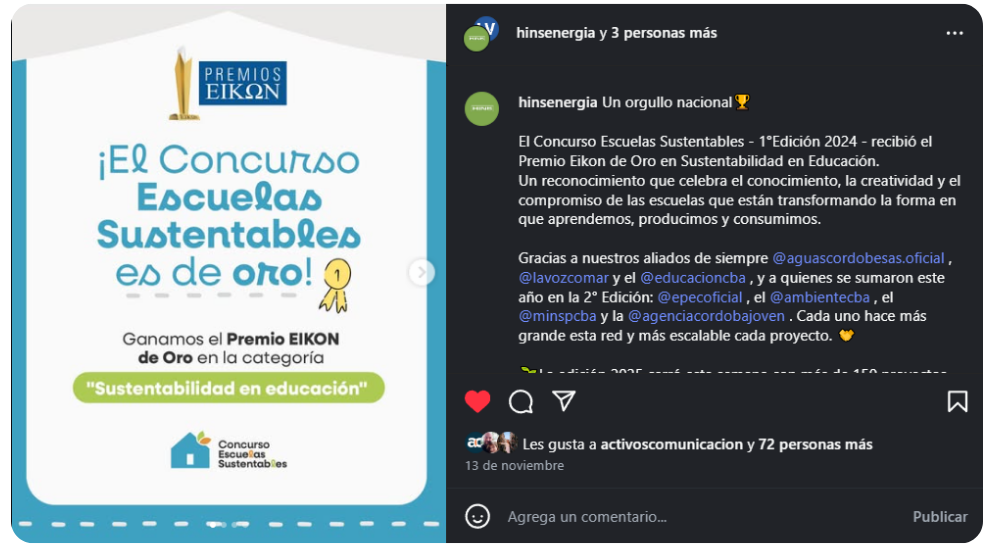

Algunos de mis
proyectos.

01 // FERIA DEL CENTRO

02 // FLINN

03 // ESC. SUSTENTABLES

04 // CUMBRE DE ECONOMÍA CIRCULAR

05 // ÚNICO JUEGOS

06 // TRABAJO PERIODÍSTICO
01 // FERIA DEL CENTRO
02 // FLINN
03 // ESC. SUSTENTABLES
04 // CUMBRE DE ECONOMÍA CIRCULAR
05 // ÚNICO JUEGOS
06 // TRABAJO PERIODÍSTICO